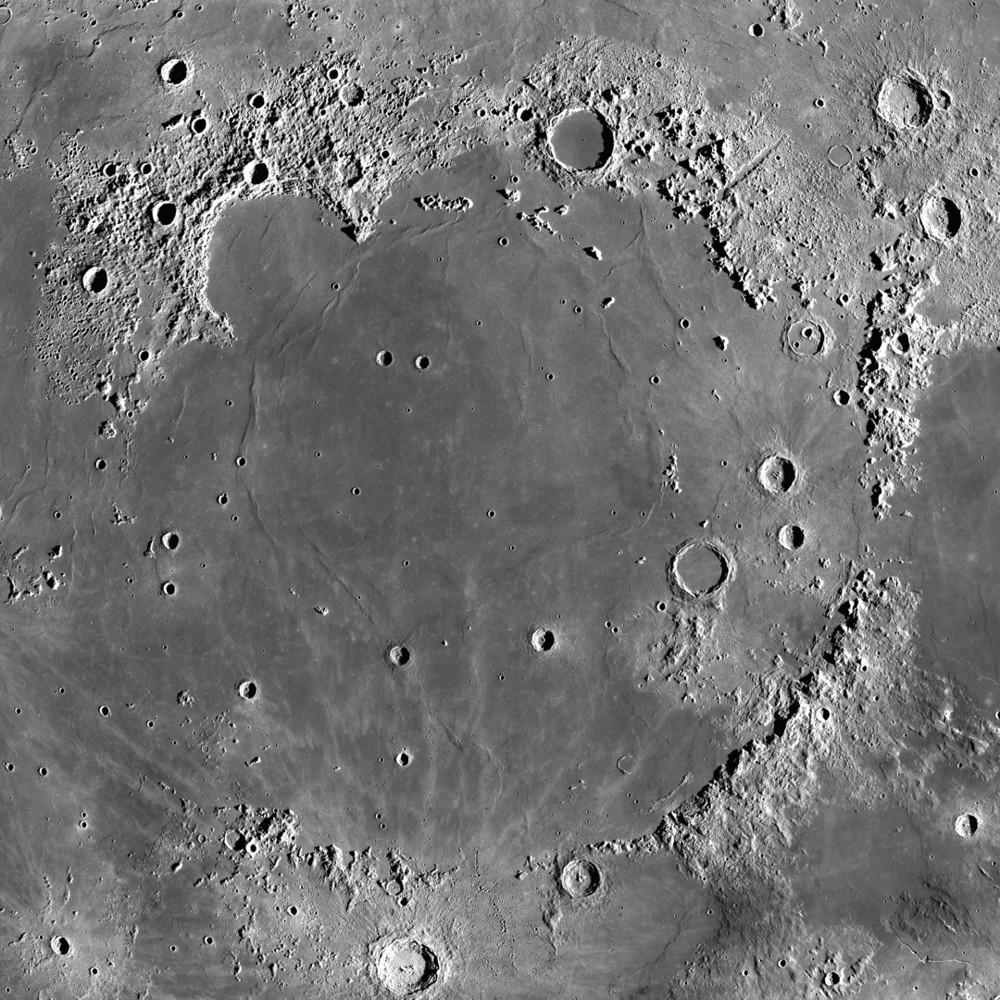

L a L u n a
La Luna (también llamada Tierra I) es el único satélite natural permanente del planeta Tierra y es el objeto astronómico más cercano. Este es el quinto satélite natural más grande del Sistema Solar. A una distancia de 384,400 km, gira alrededor de nuestro planeta al mismo ritmo que rota sobre su propio eje.
La Luna está en rotación síncrona con la Tierra, así que nos muestra constantemente la misma cara. Este, llamado rostro visible, está marcado por cráteres y mares lunares que son planicies volcánicas extensas; los primeros astrónomos los denominaron así al confundirlos visualmente con auténticos mares.

El cráter lunar Dédalos en la cara oculta de la Luna visto por el Apollo 11.
A la inversa, posee una cara oculta, que tiene menos mares, pero muchos más cráteres, como la cuenca de Aitken, el más grande del satélite y uno de los más grandes del Sistema Solar por su diámetro de 2 500 km.
Fotografía del Mare Imbrium (Mar de las lluvias)tomada por la sonda Lunar Reconnaissance Orbiter. El Mare Imbrium es uno de los mayores cráteres de impacto del sistema solar.
La Luna está desprovista de una atmósfera densa y un campo magnético. Su influencia gravitacional en la Tierra produce mareas oceánicas, mareas terrestres, un ligero alargamiento de la duración del día y la estabilización de la inclinación del eje terrestre.
Vista del Apolo 17 del Mar de las lluvias. En primer plano el cráter Pytheas y al fondo el cráter Copérnico.
En 1959, la Luna fue visitada por primera vez por una nave espacial no tripulada llamada Luna 2, lanzada por la extinta Unión Soviética. La primera persona en poner un pie en la Luna fue Neil Armstrong en la misión espacial de la NASA Apollo 11 el 20 de julio de 1969. Después de la misión Apollo 17 en 1972, la Luna solo ha sido visitada por naves espaciales no tripuladas.
La Luna no emite luz propia, esta refleja la luz del Sol, misma que demora en llegar a la Tierra 1.255 segundos.
La luna vista por la sonda espacial Lunar Reconnaissance Orbiter (LRO)
Cara visible de la Luna
Cara oculta de la Luna
Polo norte lunar
Polo sur lunar